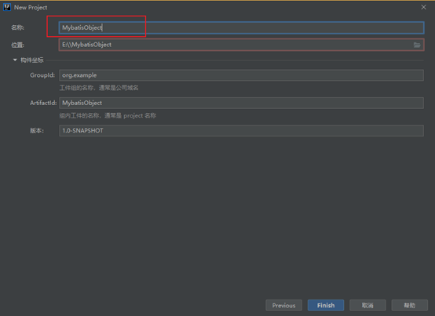
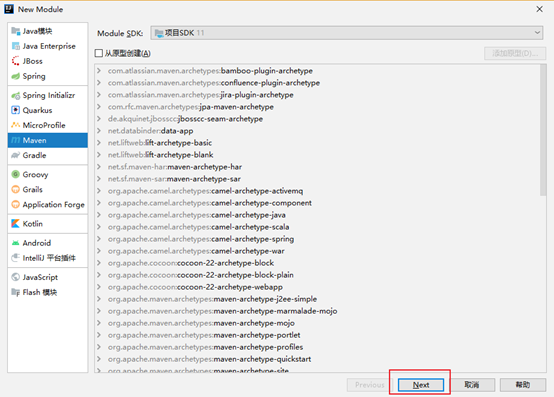
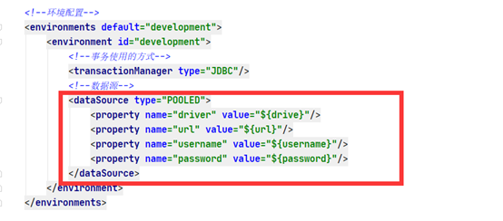
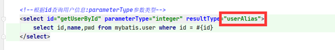
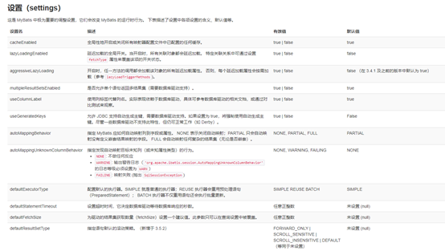
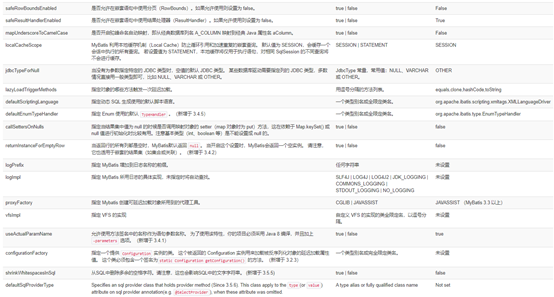
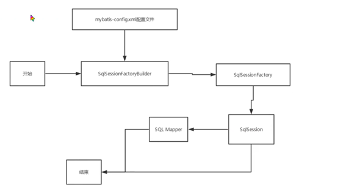
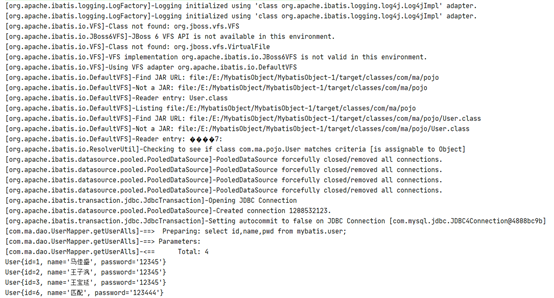
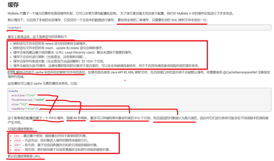
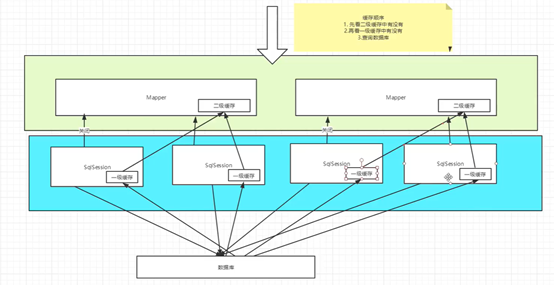

Mybatis
一、环境配置
(一)、Mybatis下载:
https://github.com/mybatis/mybatis-3/releases
(二)、Mybatis的Maven:
61<!-- https://mvnrepository.com/artifact/org.mybatis/mybatis -->2<dependency>3 <groupId>org.mybatis</groupId>4 <artifactId>mybatis</artifactId>5 <version>3.5.7</version>6</dependency>(三)、中文文档:
https://mybatis.org/mybatis-3/zh/getting-started.html
二、第一个Mybatis搭建
(一) 、搭建数据库
111CREATE mybatis;2CREATE TABLE `user`(3 `id` INT(20) NOT NULL PRIMARY KEY,4 `name` VARCHAR(30) DEFAULT NULL,5 `pwd` VARCHAR(30) DEFAULT NULL,6 7)ENGINE=INNODB DEFAULT CHARSET=utf8;8INSERT INTO `user` (`id`,`name`,`pwd`) VALUES 9(1,'马佳盛','12345'),10(2,'王子沨','12345'),11(3,'王宝延','12345');(二)、创建IDEA项目



(三)、pom.xml导入依赖
491<dependencies>2 <!--mysql驱动-->3 <dependency>4 <groupId>mysql</groupId>5 <artifactId>mysql-connector-java</artifactId>6 <version>5.1.37</version>7 </dependency>8 <!--mybatis驱动-->9 <dependency>10 <groupId>org.mybatis</groupId>11 <artifactId>mybatis</artifactId>12 <version>3.5.7</version>13 </dependency>14 <!--junit-->15 <dependency>16 <groupId>junit</groupId>17 <artifactId>junit</artifactId>18 <version>4.11</version>19 <scope>test</scope>20 </dependency>21</dependencies>22<properties>23 <project.build.sourceEncoding>UTF-8</project.build.sourceEncoding>24 <maven.compiler.encoding>UTF-8</maven.compiler.encoding>25 <java.version>11</java.version>26 <maven.compiler.source>11</maven.compiler.source>27 <maven.compiler.target>11</maven.compiler.target>28</properties>29
30<build>31 <resources>32 <resource>33 <directory>src/main/resources</directory>34 <includes>35 <include>**/*.properties</include>36 <include>**/*.xml</include>37 </includes>38 <filtering>true</filtering>39 </resource>40 <resource>41 <directory>src/main/java</directory>42 <includes>43 <include>**/*.properties</include>44 <include>**/*.xml</include>45 </includes>46 <filtering>true</filtering>47 </resource>48 </resources>49</build>(四)、创建子项目


(五)、在main—resource—创建mybatis-config.xml

(六)、Mybatis-config.xml配置
201<!--Mybatis核心配置-->2<configuration>3 <!--环境配置-->4 <environments default="development">5 <environment id="development">6 <!--事务使用的方式-->7 <transactionManager type="JDBC"/>8 <!--数据源-->9 <dataSource type="POOLED">10 <property name="driver" value="com.mysql.jdbc.Driver"/>11 <property name="url" value="jdbc:mysql://localhost:3306/mybatis?useSSL=true&useUniCode&characterEncoding=UTF-8"/>12 <property name="username" value="root"/>13 <property name="password" value="Qwer1234"/>14 </dataSource>15 </environment>16 </environments>17 <mappers>18 <mapper resource="com/ma/dao/UserMappingImpl.xml"/>19 </mappers>20</configuration>(七)、创建pojo实体类
51public class User {2
3 private Integer id;4 private String name;5 private String pwd;(八)、创建接口类
141package com.ma.dao;2
3import com.ma.pojo.User;4
5import java.util.List;6
7public interface UserMapper {8
9 /**10 * 查询数据库所有用户信息11 * @return 返回用户信息List12 */13 List<User> getUserAlls();14}(九)、XML方式实现接口
111<!--创建映射关系指向接口-->2<mapper namespace="com.ma.dao.UserMapper">3 <!--4 查询所有用户信息5 id为接口中的方法名 resultType 为返回值类型 返回一个6 resultMap 为返回值类型 返回多个7 -->8 <select id="getUserAlls" resultType="com.ma.pojo.User">9 select id,name,pwd from user10 </select>11</mapper>(十)、测试类
101SqlSession sqlSession = ReadFileGetconnect.getSession();2
3public void test1(){5 UserMapper mapper = sqlSession.getMapper(UserMapper.class);6 List<User> userAlls = mapper.getUserAlls();7 for (User userAll : userAlls) {8 System.out.println(userAll);9 }10}三、增删查改
(一)接口
361public interface UserMapper {2
3 /**4 * 查询数据库所有用户信息5 * @return 返回用户信息List6 */7 List<User> getUserAlls();8
9 /**10 * 根据id查询员工信息11 * @param id 员工id12 * @return 返回user13 */14 User getUserById(Integer id);15
16 /**17 * 添加用户信息18 * @param user 添加的用户19 * @return 成功1 失败020 */21 int insertUser(User user);22
23 /**24 * 更新用户信息25 * @param user 用户信息26 * @return 成功1 失败027 */28 int updateUser(User user);29
30 /**31 * 根据id删除用户32 * @param id 用户id33 * @return 成功1 失败034 */35 int delUser(Integer id);36}(二) 、XML实现接口
271<!--创建映射关系指向接口-->2<mapper namespace="com.ma.dao.UserMapper">3 <!--查询所有用户信息-->4 <select id="getUserAlls" resultType="com.ma.pojo.User">5 select id,name,pwd from mybatis.user;6 </select>7
8 <!--根据id查询用户信息:parameterType参数类型-->9 <select id="getUserById" parameterType="integer" resultType="com.ma.pojo.User">10 select id,name,pwd from mybatis.user where id = #{id}11 </select>12
13 <!--插入用户-->14 <insert id="insertUser" parameterType="com.ma.pojo.User">15 insert into mybatis.user (id,name,pwd) values (#{id},#{name},#{pwd})16 </insert>17
18 <!--更新用户-->19 <update id="updateUser" parameterType="com.ma.pojo.User">20 update mybatis.user set name = #{name},pwd=#{pwd} where id=#{id}21 </update>22
23 <!--删除用户-->24 <delete id="delUser" parameterType="int">25 delete from mybatis.user where id=#{id}26 </delete>27</mapper>(三)、测试
591public class TextUserMapper {2
3 SqlSession sqlSession = ReadFileGetconnect.getSession();4
5 //查询所有信息6 7 public void test1(){8 UserMapper mapper = sqlSession.getMapper(UserMapper.class);9 List<User> userAlls = mapper.getUserAlls();10 for (User userAll : userAlls) {11 System.out.println(userAll);12 }13 }14
15 //根据id查询信息16 17 public void test2() {18 UserMapper mapper = sqlSession.getMapper(UserMapper.class);19 User userById = mapper.getUserById(1);20 System.out.println(userById);21 sqlSession.close();22 }23
24 //添加测试25 26 public void test3() {27 UserMapper mapper = sqlSession.getMapper(UserMapper.class);28 int result = mapper.insertUser(new User(4, "哈哈", "123456"));29 if(result > 0){30 System.out.println("添加成功");31 }32 sqlSession.commit();33 sqlSession.close();34 }35
36 //修改测试37 38 public void test4() {39 UserMapper mapper = sqlSession.getMapper(UserMapper.class);40 int result = mapper.updateUser(new User(4, "hehe", "123123"));41 if(result > 0){42 System.out.println("修改成功");43 }44 sqlSession.commit();45 sqlSession.close();46 }47
48 //删除测试49 50 public void test5() {51 UserMapper mapper = sqlSession.getMapper(UserMapper.class);52 int result = mapper.delUser(4);53 if(result > 0){54 System.out.println("删除成功");55 }56 sqlSession.commit();57 sqlSession.close();58 }59}四、万能的Map,Map作为参数操作
(一) 、说明
当查询的条件为少数的话就可以使用map,而不用创建对象,这样节省资源
以查询添加为例
(二)、接口
161public interface UserMapper {2 3/**4 * 使用map根据id查询5 * @param map map6 * @return 返回用户信息7 */8 User getUserByIdTwo(Map<String,Object> map);9
10 /**11 * 使用map添加数据12 * @param map map13 * @return 成功1 失败014 */15 int insertUserTwo(Map<String,Object> map);16}(三)、XML实现
91<!--根据id查询用户信息:parameterType参数类型-->2<select id="getUserByIdTwo" parameterType="map" resultType="com.ma.pojo.User">3 select id,name,pwd from mybatis.user where id = #{id}4</select>5
6<!--插入用户-->7<insert id="insertUserTwo" parameterType="map">8 insert into mybatis.user (id,name,pwd) values (#{id},#{name},#{pwd})9</insert>(四)、测试
311public class TextUserMapper {2
3 SqlSession sqlSession = ReadFileGetconnect.getSession();4
5 6 //使用Map根据id查询7 public void test6() {8 UserMapper mapper = sqlSession.getMapper(UserMapper.class);9 Map<String,Object> map = new HashMap<>();10 map.put("id",2);11 User userById = mapper.getUserByIdTwo(map);12 System.out.println(userById);13 sqlSession.close();14 }15
16 17 //使用map添加数据18 public void test7() {19 UserMapper mapper = sqlSession.getMapper(UserMapper.class);20 Map<String,Object> map = new HashMap<>();21 map.put("id",6);22 map.put("name","匹配");23 map.put("pwd","123444");24 int result = mapper.insertUserTwo(map);25 if(result > 0){26 System.out.println("添加成功");27 }28 sqlSession.commit();29 sqlSession.close();30 }31}五、模糊查询
(一)、接口
11List<User> mohuSel(String name);(二)、实现XML
31<select id="mohuSel" parameterType="string" resultType="com.ma.pojo.User">2 select * from mybatis.user where name like "%"#{value}"%"3</select>(三)、测试
91public void mohuSel(){3 UserMapper mapper = sqlSession.getMapper(UserMapper.class);4 List<User> user = mapper.mohuSel("王");5 for (User user1 : user) {6 System.out.println(user1);7 }8 sqlSession.close();9}六、Mybatis配置解析
(一)、环境
Mybatis可以适用于多种环境

(二)、默认配置
mybatis默认的事务管理器是jdbc。连接池为pooled
(三)、提取数据库连接属性
1、创建配置文件
41drive=com.mysql.jdbc.Driver2url=jdbc:mysql://localhost:3306/mybatis?useSSL=true&useUniCode&characterEncoding=UTF-83username=root4password=Qwer12342、XML引入配置文件
xxxxxxxxxx11<properties resource="jdbcAttributes.properties"/>3、使用${}匹配连接数据库属性

4、可以在< properties >中添加额外的属性
注意点:如果name重名,优先使用配置文件中的属性值

(四)、别名
有2种起别名的方式:
第一种为指定类分配别名
第二种:为包起别名,包下的类别名为类名首字母小写
1、第一种
31<typeAliases>2 <typeAlias alias="user" type="com.ma.pojo.User "/>3</typeAliases>2、第二种
31<typeAliases>2 <package name="com.ma"/>3</typeAliases>3、第一种使用

原来的com.ma.pojo.User可以简写为别名形式
4、第二种使用
包下面类名首字母小写

(六)、设置事务自动提交
在返回连接的时候添加参数true
41//返回连接2public static SqlSession getSession(){3 return sqlSessionFactory.openSession(true);4}(五)、Mybatis属性设置


171<settings>2 <setting name="cacheEnabled" value="true"/>3 <setting name="lazyLoadingEnabled" value="true"/>4 <setting name="multipleResultSetsEnabled" value="true"/>5 <setting name="useColumnLabel" value="true"/>6 <setting name="useGeneratedKeys" value="false"/>7 <setting name="autoMappingBehavior" value="PARTIAL"/>8 <setting name="autoMappingUnknownColumnBehavior" value="WARNING"/>9 <setting name="defaultExecutorType" value="SIMPLE"/>10 <setting name="defaultStatementTimeout" value="25"/>11 <setting name="defaultFetchSize" value="100"/>12 <setting name="safeRowBoundsEnabled" value="false"/>13 <setting name="mapUnderscoreToCamelCase" value="false"/>14 <setting name="localCacheScope" value="SESSION"/>15 <setting name="jdbcTypeForNull" value="OTHER"/>16 <setting name="lazyLoadTriggerMethods" value="equals,clone,hashCode,toString"/>17</settings>(六)、Mybatis的插件

(七)、映射器(mapper)
1、第一种方式:通过resource
resource指向实现XML的全类名
31<mappers>2 <mapper resource="com/ma/dao/UserMappingImpl.xml"/>3</mappers>2、第二种方式:通过Class查找
Class指向实现接口的全类名
31<mappers>2 <mapper class="com.ma.dao.UserMapper"/>3</mappers>3、第三种方式:通过包扫描
31<mappers>2 <package name="com.ma.dao"/>3</mappers>4、注意点:
使用第二种和第三种方式,**接口和实现接口的名字必须和接口同名并且在同一个包下**
(八)、作用域（Scope）和生命周期

1、SqlSessionFactoryBuilder
为了创建SqlSessionFactory工厂,一旦创建了 SqlSessionFactory，就不再需要它了。
2、SqlSessionFactory
为了创建SqlSession,SqlSessionFactory 一旦被创建就应该在应用的运行期间一直存在，没有任何理由丢弃它或重新创建另一个实例。
3、SqlSession
每个线程都应该有它自己的 SqlSession 实例。SqlSession 的实例不是线程安全的，因此是不能被共享的,一般写在方法中。
4、Mapping
映射器是一些绑定映射语句的接口。映射器接口的实例是从 SqlSession 中获得的。每一个Mapping都是一个业务

七、解决数据库字段和实体类属性不一致问题
(一)、第一种方式:起别名
select id,name,pwd as password from user;
(二)、第二种方式:使用resultMap
41<!--使用映射-->2<select id="getUserById" parameterType="integer" resultMap="MapUser">3 select id,name,pwd from mybatis.user where id = #{id}4</select>resultMap的属性值设置为映射匹配id
51<!--设置字段和属性匹配-->2<resultMap id="MapUser" type="user">3 <!—类属性:password 数据库字段:pwd-->4 <result property="password" column="pwd"/>5</resultMap>八、日志

(一)、STDOUT_LOGGING:
java自带的日志
1、设置
41<!--标准的日志实现-->2<settings>3 <setting name="logImpl" value="STDOUT_LOGGING"/>4</settings>2、输出

(二)、Log4J
1、导入依赖
61<!--日志-->2<dependency>3 <groupId>log4j</groupId>4 <artifactId>log4j</artifactId>5 <version>1.2.17</version>6</dependency>2、创建一个log4j的配置文件添加配置
241#将等级为DEBUG的日志信息输出到console和file这两个目的地，console和file的定义在下面的代码2log4j.rootLogger=DEBUG,console,file3
4#控制台输出的相关设置5log4j.appender.console = org.apache.log4j.ConsoleAppender6log4j.appender.console.Target = System.out7log4j.appender.console.Threshold=DEBUG8log4j.appender.console.layout = org.apache.log4j.PatternLayout9log4j.appender.console.layout.ConversionPattern=[%c]-%m%n10
11#文件输出的相关设置12log4j.appender.file = org.apache.log4j.RollingFileAppender13log4j.appender.file.File=./log/ma.log14log4j.appender.file.MaxFileSize=10mb15log4j.appender.file.Threshold=DEBUG16log4j.appender.file.layout=org.apache.log4j.PatternLayout17log4j.appender.file.layout.ConversionPattern=[%p][%d{yy-MM-dd}][%c]%m%n18
19#日志输出级别20log4j.logger.org.mybatis=DEBUG21log4j.logger.java.sql=DEBUG22log4j.logger.java.sql.Statement=DEBUG23log4j.logger.java.sql.ResultSet=DEBUG24log4j.logger.java.sql.PreparedStatement=DEBUG3、Mybatis主配置文件设置
41<!--日志设置-->2<settings>3 <setting name="logImpl" value="LOG4J"/>4</settings>4、输出

九、分页查询
(一)、接口
61/**2 * 分页查询3 * @param pageInt 分页起始位置和查询几个4 * @return 返回User数组5 */6List<User>pageUsers(Map<String,Integer> pageInt);(二)、XML实现
41<!--分页查询-->2<select id="pageUsers" parameterType="map" resultMap="MapUser">3 select id,name,pwd from mybatis.user limit #{startIndex},#{endIndex}4</select>(三)、测试
121public void textPageUsers() {3 UserMapper mapper = sqlSession.getMapper(UserMapper.class);4 Map<String,Integer> map = new HashMap<>();5 map.put("startIndex",0);6 map.put("endIndex",2);7 List<User> users = mapper.pageUsers(map);8 for (User user : users) {9 System.out.println(user);10 }11 sqlSession.close();12}十、使用注解实现SQl语句增删查改
(一)、接口
541public interface UserMapperOne {2
3 /**4 * 查询数据库所有用户信息5 *6 * @return 返回用户信息List7 */8 ("select id,name,pwd as password from user")9 List<User> getUserAlls();10
11 /**12 * 根据id查询用户13 *14 * @param id id号15 * @return 成功返回用户 失败null16 */17 ("select id,name,pwd as password from user where id = #{id}")18 User getUserById(("id") int id);19
20 /**21 * 根据id,用户名查询用户22 *23 * @param id id号24 * @param name 用户名25 * @return 成功返回用户 失败null26 */27 ("select id,name,pwd as password from user where id = #{id}")28 User getUserByIdAndName(("id") int id, ("name") String name);29
30 /**31 * 添加用户32 *33 * @param user 用户34 * @return 成功1 失败-135 */36 ("insert into user (id,name,pwd) values (#{id},#{name},#{password})")37 int addUser(User user);38
39 /**40 * 更新用户41 * @param user 用户给42 * @return 成功1 失败-143 */44 ("update user set name=#{name},pwd=#{password} where id=#{id}")45 int updateUser(User user);46
47 /**48 * 根据id删除用户49 * @param id id50 * @return 成功1 失败-151 */52 ("delete from user where id =#{id}")53 int deleteUser(Integer id);54}(二)、Mybatis配置文件添加映射
31<mappers>2 <mapper class="com.ma.dao.UserMapper"/>3</mappers>(三)、测试
441public class TextUserMapper {2
3 SqlSession sqlSession = ReadFileGetconnect.getSession();4
5 //查询所有信息6 7 public void test1(){8 UserMapperOne mapper = sqlSession.getMapper(UserMapperOne.class);9 List<User> userAlls = mapper.getUserAlls();10 for (User userAll : userAlls) {11 System.out.println(userAll);12 }13 }14
15 16 public void test2(){17 UserMapperOne mapper = sqlSession.getMapper(UserMapperOne.class);18 User user = mapper.getUserById(1);19 System.out.println(user);20 sqlSession.close();21 }22
23 24 public void test3(){25 UserMapperOne mapper = sqlSession.getMapper(UserMapperOne.class);26 int user = mapper.addUser(new User(8,"张三","9999"));27 sqlSession.close();28 }29
30 31 public void test4(){32 UserMapperOne mapper = sqlSession.getMapper(UserMapperOne.class);33 mapper.updateUser(new User(8,"李四","8888"));34 sqlSession.close();35 }36
37 38 public void test5(){39 UserMapperOne mapper = sqlSession.getMapper(UserMapperOne.class);40 mapper.deleteUser(8);41 sqlSession.close();42 }43
44}(四)、@param属性
@param属性如果是基本数据类型或String建议加上,可以规范sql语句中字段的名字
21@Select("select id,name,pwd as password from user where id = #{id} and name=#{name}")2User getUserByIdAndName(@Param("id") int id, @Param("name") String name);十一、LomBok
(一)、简介
Project Lombok is a java library that automatically plugs into your editor and build tools, spicing up your java. Never write another getter or equals method again, with one annotation your class has a fully featured builder, Automate your logging variables, and much more.
(二)、使用步骤
1、安装插件

(二)、导入jar包
61<!—LomBok依赖-->2<dependency>3 <groupId>org.projectlombok</groupId>4 <artifactId>lombok</artifactId>5 <version>1.18.20</version>6</dependency>(三)、LomBok中的注解
| 注解 | 使用的位置 | 说明 | 示例 |
|---|---|---|---|
| @Getter | 属性,类 | 放在属性上生成一个get方法,放在类上都生成 | @Getter private int age = 10; |
| @Setter | 属性,类 | 放在属性上生成一个set方法,放在类上都生成 | @Setter private int age = 10; |
| @NonNull | 属性 | 没有值赋值为空 | public NonNullExample(@NonNull Person person) { |
| @Data | 类 | 自动生成无参构造,setter/getter、equals、canEqual、hashCode、toString方法，如为final属性，则不会为该属性生成setter方法。 | @Data public class DataExample { |
| @Cleanup | 需要关闭的变量前面 | 该注解能帮助我们自动调用close()方法 | @Cleanup InputStream in = new FileInputStream(args[0]); |
| @EqualsAndHashCode | 类 | 自动生成EqualsAndHashCode,(exclude)排除属性 | @EqualsAndHashCode(exclude={"id", "shape"}) public class EqualsAndHashCodeExample { |
| @ToString | 类 | 自动生成toString方法,(exclude)排除属性 | @ToString(exclude="id") public class ToStringExample { |
| @NoArgsConstructor | 类 | 无参构造 | @NoArgsConstructor public static class NoArgsExample { |
| @RequiredArgsConstructor | 类 | 部分属性构造 | @RequiredArgsConstructor public static class NoArgsExample { |
| @AllArgsConstructor | 类 | 全部属性构造 | @AllArgsConstructor public static class NoArgsExample { |
(四)、使用
81 2 3 public class User {4 5 private Integer id;6 private String name;7 private String password;8 }十二、一对多,多对一
(一)、说明
多个学生对应一个老师 多对一
一个老师对应多个学生 一对多
(二)、环境搭建
1、搭建数据库
211 CREATE TABLE `teacher` (2 `id` INT(10) NOT NULL,3 `name` VARCHAR(30) DEFAULT NULL,4 PRIMARY KEY (`id`)5 ) ENGINE=INNODB DEFAULT CHARSET=utf86 7 INSERT INTO teacher(`id`, `name`) VALUES (1, "秦老师"); 8 9 CREATE TABLE `student` (10 `id` INT(10) NOT NULL,11 `name` VARCHAR(30) DEFAULT NULL,12 `tid` INT(10) DEFAULT NULL,13 PRIMARY KEY (`id`),14 KEY `fktid` (`tid`),15 CONSTRAINT `fktid` FOREIGN KEY (`tid`) REFERENCES `teacher` (`id`)16 ) ENGINE=INNODB DEFAULT CHARSET=utf8;17 INSERT INTO `student` (`id`, `name`, `tid`) VALUES (1, "小明", 1); 18 INSERT INTO `student` (`id`, `name`, `tid`) VALUES (2, "小红", 1); 19 INSERT INTO `student` (`id`, `name`, `tid`) VALUES (3, "小张", 1); 20 INSERT INTO `student` (`id`, `name`, `tid`) VALUES (4, "小李", 1); 21 INSERT INTO `student` (`id`, `name`, `tid`) VALUES (5, "小王", 1);2、创建工程
3、创建pojo类
(1)、Teacher
111 2 public class Teacher {3 //多对一4 private Integer id;5 private String name;6 7 //一对多8 private Integer id;9 private String name;10 private List<Student> student;11 }(2)、Student
121 2 public class Student {3 //多对一4 private Integer id;5 private String name;6 private Teacher teacher;7 8 //一对多9 private Integer id;10 private String name;11 private Intege teacher;12 }4、创建对应pojo接口
5、创建对应实现XML,并添加头文件
Student
81 2 3 4 5 <!--Mybatis核心配置-->6 <mapper namespace="com.ma.dao.TeacherMapping">7 8 </mapper>Teacher
81 2 3 4 5 <!--Mybatis核心配置-->6 <mapper namespace="com.ma.dao.StudentMapping">7 8 </mapper>6.Mybatis中映射XML
51 <!--映射实现方式-->2 <mappers>3 <mapper resource="com/ma/dao/StudentMapping.xml"/>4 <mapper resource="com/ma/dao/TeacherMapping.xml"/>5 </mappers>7.测试
(1)、接口
51 public interface TeacherMapping {2 3 ("select * from teacher where id = #{id}")4 Teacher getTeacher(("id") Integer id);5 }(2)、Test
101 public class text {2 3 public static void main(String[] args) {4 SqlSession session = ReadFileGetconnect.getSession();5 TeacherMapping mapper = session.getMapper(TeacherMapping.class);6 Teacher teacher = mapper.getTeacher(1);7 System.out.println(teacher);8 session.close();9 }10 }(三)、多对一查询
1、方式一:子查询标签嵌套方式
(1)、接口
61 public interface StudentMapping {2 3 List<Student> getStudentsAndTeacherNames();4 5 Teacher getTeacherById(Integer id);6 }(二)、XML
171 <!--映射-->2 <resultMap id="StudentAndTeacher" type="Student">3 <result property="id" column="id"/>4 <result property="name" column="name"/>5 <!--对象属性使用association 集合使用Collection-->6 <!--javaType:java的类 select:子查询-->7 <association property="teacher" column="tid" javaType="Teacher" select="getTeacherById"/>8 </resultMap>9 10 <!--使用Map映射属性-->11 <select id="getStudentsAndTeacherNames" resultMap="StudentAndTeacher">12 select * from student;13 </select>14 15 <select id="getTeacherById" resultType="Teacher">16 select id,name from teacher where id = #{tid}17 </select>2、方式二:联表查询
(一)、接口
61 public interface StudentMapping {2 3 List<Student> getStudentsAndTeacherNames();4 5 Teacher getTeacherById(Integer id);6 }(二)、XML
171 <!--映射-->2 <resultMap id="StudentAndTeacher" type="Student">3 <result property="id" column="sid"/>4 <result property="name" column="sname"/>5 <!--对象属性使用association 集合使用Collection-->6 <!--javaType:java的类 select:子查询-->7 <association property="teacher" javaType="Teacher">8 <result property="name" column="tname"/>9 </association>10 </resultMap>11 12 <!--使用Map映射属性-->13 <select id="getStudentsAndTeacherNames" resultMap="StudentAndTeacher">14 SELECT s.id AS sid,s.name AS sname,t.name tname15 FROM student AS s,teacher AS t16 WHERE s.tid=t.id;17 </select>(四)、一对多
1、方式一:子查询标签嵌套方式
(1)、接口
71 public interface TeacherMapping {2 3 List<Teacher> getStudentAndTeachers(("id") Integer id);4 5 Student getStudentInfo();6 7 }(2)、XML
121 <!--Mybatis核心配置-->2 <mapper namespace="com.ma.dao.TeacherMapping">3 <select id="getStudentAndTeachers" resultMap="getStudentAndTeachersMapping">4 select * from teacher where id=#{id};5 </select>6 <resultMap id="getStudentAndTeachersMapping" type="Teacher">7 <collection property="student" javaType="ArrayList" ofType="Student" select="getStudentInfo" column="id"/>8 </resultMap>9 <select id="getStudentInfo" resultType="Student">10 select * from student where tid=#{id};11 </select>12 </mapper>(3)、测试
131 public class aa {2 3 4 public void test1(){5 SqlSession session = ReadFileGetconnect.getSession();6 TeacherMapping mapper = session.getMapper(TeacherMapping.class);7 List<Teacher> studentAndTeachers = mapper.getStudentAndTeachers(1);8 for (Teacher studentAndTeacher : studentAndTeachers) {9 System.out.println(studentAndTeacher);10 }11 session.close();12 }13 }2、方式二:联表查询
(1)、接口
51 public interface TeacherMapping {2 3 List<Teacher> getStudentAndTeachers(("id") Integer id);4 5 }(2)、XML
141 <select id="getStudentAndTeachers" resultMap="getStudentAndTeacherMapping">2 select s.id sid,s.name sname,t.name tname,t.id tid3 from student as s,teacher t4 where s.tid = t.id and t.id=#{id}5 </select>6 <resultMap id="getStudentAndTeacherMapping" type="Teacher">7 <result property="id" column="tid"/>8 <result property="name" column="tname"/>9 <collection property="student" ofType="Student">10 <result property="id" column="sid"/>11 <result property="name" column="sname"/>12 <result property="tid" column="tid"/>13 </collection>14 </resultMap>(3)、测试
131 public class aa {2 3 4 public void test1(){5 SqlSession session = ReadFileGetconnect.getSession();6 TeacherMapping mapper = session.getMapper(TeacherMapping.class);7 List<Teacher> studentAndTeachers = mapper.getStudentAndTeachers(1);8 for (Teacher studentAndTeacher : studentAndTeachers) {9 System.out.println(studentAndTeacher);10 }11 session.close();12 }13 }十三、动态SQL
(一)、概念
根据不通的条件生成不通的动态SQL语句,其中有4中标签
1- if 判断2- choose (when, otherwise) switch3- trim (where, set) 尽量不让sql出错4- foreach 循环
(二)、环境搭建
1、数据库
81 CREATE TABLE `blog`(2 `id` VARCHAR(50) NOT NULL COMMENT '博客id',3 `title` VARCHAR(100) NOT NULL COMMENT '博客标题',4 `author` VARCHAR(30) NOT NULL COMMENT '博客作者',5 `create_time` DATETIME NOT NULL COMMENT '创建时间',6 `views` INT(30) NOT NULL COMMENT '浏览量'7 8 )ENGINE=INNODB DEFAULT CHARSET=utf82、创建对应的pojo
91 2 public class Blog {3 4 private String id;5 private String title;6 private String author;7 private Date createTime;8 private Integer views;9 }3、创建接口
31 public interface BlogMapping {2 int addBlog(Blog blog);3 }4、创建接口对应XML
111 2 3 4 5 <!--Mybatis核心配置-->6 <mapper namespace="com.ma.dao.BlogMapping">7 <insert id="addBlog" parameterType="com.ma.pojo.Blog">8 insert into blog (id,title,author,create_time,views)9 values (#{id},#{title},#{author},#{createTime},#{views})10 </insert>11 </mapper>5、Mybatis配置文件添加映射
xxxxxxxxxx41 <!--映射实现方式-->2 <mappers>3 <mapper resource="com/ma/dao/BlogMapping.xml"/>4 </mappers>添加字段转换 如:数据库中 user_name java中userName这样形式的自动转换
31 <settings>2 <setting name="mapUnderscoreToCamelCase" value="true"/>3 </settings>6、添加一个工具类生成不同的编号
61 public class GenerateUUIDUtils {2 3 public static String getUUID(){4 return UUID.randomUUID().toString().replaceAll("-","");5 }6 }7、数据库注入数据
271 2 public void test6() {3 SqlSession sqlSession = ReadFileGetconnect.getSession();4 com.ma.dao.BlogMapping mapper = sqlSession.getMapper(com.ma.dao.BlogMapping.class);5 Blog blog = new Blog();6 blog.setId(GenerateUUIDUtils.getUUID());7 blog.setTitle("Mybatis");8 blog.setAuthor("狂神说");9 blog.setCreateTime(new Date());10 blog.setViews(9999);11 12 mapper.addBlog(blog);13 14 blog.setId(GenerateUUIDUtils.getUUID());15 blog.setTitle("Java");16 mapper.addBlog(blog);17 18 blog.setId(GenerateUUIDUtils.getUUID());19 blog.setTitle("Spring");20 mapper.addBlog(blog);21 22 blog.setId(GenerateUUIDUtils.getUUID());23 blog.setTitle("微服务");24 mapper.addBlog(blog);25 26 sqlSession.close();27 }(三)、标签
1、if标签
(1)、语法:
11 <if title=""></if>(2)、使用
接口
311 public interface BlogMapping {2 3 List<Blog> queryBlog(Map<String,Object> map);4 }5 XML6 <select id="queryBlog" parameterType="map" resultType="Blog">7 <!--查询所有语句-->8 select * from blog where 1=19 <!--如果title有值的话拼接if中语句-->10 <if test="title != null">11 and title = #{title}12 </if>13 <!--如果author有值的话拼接if中语句-->14 <if test="author != null">15 and author = #{author}16 </if>17 </select>18 测试19 @Test20 public void test1(){21 SqlSession session = ReadFileGetconnect.getSession();22 BlogMapping mapper = session.getMapper(BlogMapping.class);23 Map<String, Object> map = new HashMap<>();24 map.put("title","java");25 //如果map中没有值查询全部,有title查找关于title的值26 List<Blog> blogs = mapper.queryBlog(map);27 for (Blog blog : blogs) {28 System.out.println(blog);29 }30 session.close();31 }2、where标签
(1)、说明
sql语句后面添加where标签,当满足第一个条件的时候自动添加where,当满足第二个条件的时候and自动转换为where
(2)、语法
31 <where>2 代码块3 </where>(3)、使用
151 <select id="queryBlog" parameterType="map" resultType="Blog">2 <!--查询所有语句-->3 select * from blog4 <where>5 <!--满足第一个条件在连接的时候往前面添加where-->6 <if test="title != null">7 title = #{title}8 </if>9 <!--满足第二个条件连接的时候自动将and转换为where-->10 <if test="author != null">11 and author = #{author}12 </if>13 </where>14 <!--如果title有值的话拼接if中语句-->15 </select>3、choose (when, otherwise)
(1)、说明
相当于java的switch当一个满足就不执行一下个
(2)、语法
121 <choose>2 <when test="title != null">3 title = #{title}4 </when>5 <when test="author">6 and author = #{author}7 </when>8 <!--如果添加otherwise就必须一个满足-->9 <otherwise>10 and views = #{views}11 </otherwise>12 </choose>(3)、使用
x
1 <select id="queryBlog" parameterType="map" resultType="Blog">2 select * from blog3 <where>4 <choose>5 <when test="title != null">6 title = #{title}7 </when>8 <when test="author">9 and author = #{author}10 </when>11 <otherwise>12 and views = #{views}13 </otherwise>14 </choose>15 </where>16 </select>4、set标签
(1)、说明
和where差不错,set用于update,会在首次判断成功添加set,自动去掉末尾逗号
(2)、语法
41 <set>2 <if test="title != null">title = #{title},</if>3 <if test="author != null">author = #{author},</if>4 </set>(3)、使用
81 <update id="updateBlog" parameterType="map">2 update blog3 <set>4 <if test="title != null">title = #{title},</if>5 <if test="author != null">author = #{author},</if>6 </set>7 where id = #{id};8 </update>4、foreach标签
(1)、语法
51 <!--collection:循环名 item:赋值项 open:开始 separator:中间 close:结尾-->2 <foreach collection="listBlog" item="id" open="(" separator="or" close=")">3 <!--判断-->4 id = #{id}5 </foreach>(2)、使用
81 <select id="queryBlog" parameterType="map" resultType="Blog">2 select * from blog3 <where>4 <foreach collection="listBlog" item="id" open="(" separator="or" close=")">5 id = #{id}6 </foreach>7 </where>8 </select>(四)、SQL片段(抽取公共部分)
1、使用sql标签把公共部分写入标签内
41 <sql id="title_author">2 <if test="title != null">title = #{title},</if>3 <if test="author != null">author = #{author},</if>4 </sql>2、然后再使用的地方添加include标签
11 <include refid="title_author"></include>十四、缓存
(一)、简介
1、默认情况
只启用了本地的会话缓存，它仅仅对一个会话中的数据进行缓存。 要启用全局的二级缓存，只需要在你的 SQL 映射文件中添加一行
2、缓存的方式
select 语句的结果将会被缓存。
insert、update 和 delete 语句会刷新缓存。
缓存会使用最近最少使用算法（LRU, Least Recently Used）算法来清除不需要的缓存。
缓存不会定时进行刷新
3、策略
可用的清除策略有：
· LRU – 最近最少使用：移除最长时间不被使用的对象。
· FIFO – 先进先出：按对象进入缓存的顺序来移除它们。
· SOFT – 软引用：基于垃圾回收器状态和软引用规则移除对象。
· WEAK – 弱引用：更积极地基于垃圾收集器状态和弱引用规则移除对象。
默认的清除策略是 LRU。
(二)、一级缓存(默认缓存)
默认开启,声明周期为每一个SQLsession的开启到关闭
1、测试
(1)、开启日志功能
31 <settings>2 <setting name="logImpl" value="STDOUT_LOGGING"/>3 </settings>(2)、测试中查询23
111 2 public void test2(){3 UserMapperOne mapper = sqlSession.getMapper(UserMapperOne.class);4 User user1 = mapper.getUserById(1);5 User user2 = mapper.getUserById(1);6 User user3 = mapper.getUserById(1);7 System.out.println(user1);8 System.out.println(user2);9 System.out.println(user3);10 sqlSession.close();11 }(3)、结果

(三)、二级缓存

1、说明
二级缓存也叫全局缓存,一级缓存作用太低了,所以诞生了二级缓存,基于namespace级别的缓存,一个名称空间,对应一个二级缓存
2、工作机制
(1)、一个会话查询一条数据,这个数据就会被放在当前会话的一级缓存中;
(2)、如果会话关闭,一级缓存流没了,但是我们想要的是,会话关闭了,一级缓存中的数据就会保存到二级缓存中;
(3)、新的会话查询信息,就可以从二级缓存中获取内容;
(4)、不同的mapper查出的数据会放在自己对应的缓存中;
3、开启步骤
(1)、在Mybatis配置文件显示开启全局缓存
31 <settings>2 <setting name="cacheEnabled" value="true"/>3 </settings>(2)、Mapper中开启二级缓存
51 <mapper namespace="com.ma.dao.UserMapping">2 3 <!--开启二级缓存-->4 <cache/> //如果不设置eviction的话pojo类需要序列化,实现Serializable接口5 </mapper>也可以自定义一些参数
51 <!--开启二级缓存-->2 <cache eviction="FIFO" //先进先出,如果不设置的话pojo类需要序列化,实现Serializable接口3 flushInterval="60000" //60秒刷新4 size="512" //最多512个引用5 readOnly="true"/> //只读开启4、测试
181 2 public void test2(){3 //session14 SqlSession sqlSession1 = ReadFileGetconnect.getSession();5 UserMapperOne mapper1 = sqlSession1.getMapper(UserMapperOne.class);6 User user1 = mapper1.getUserById(1);7 System.out.println(user1);8 //session1关闭,将缓存存入二级缓存9 sqlSession1.close();10 11 //session212 SqlSession sqlSession2 = ReadFileGetconnect.getSession();13 UserMapperOne mapper2 = sqlSession2.getMapper(UserMapperOne.class);14 //直接去二级缓存取数据15 User user2 = mapper2.getUserById(1);16 System.out.println(user2);17 sqlSession2.close();18 }(四)、缓存的流程
